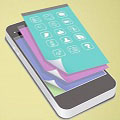

<div class="content endraggable">
	
	<div class="game_area abs poi" style="top:40px;left:40px;" data-toggle="modal" data-target="#myModal">
		<div class="game_box abs " >
			<span>Read Me First</span>
		</div>
	</div>
	<div class="game_area abs poi" style="top:40px;left:200px;" onclick="window.open('http://www.wangpeng88.ren/');">
		<div class="game_box abs " >
			<span>前端开发网站</span>
		</div>
	</div>
	<div class="game_area abs poi" style="top:40px;left:360px;"  onclick="window.open('http://www.jierigou.win/gou/');">
		<div class="game_box abs " >
			<span>节日购</span>
		</div>
	</div>
	<!-- Modal -->
	<div class="modal fade" id="myModal" >
		<div class="modal-dialog">
			<div class="modal-content">
				<div class="modal-header">
					<button type="button" class="close" data-dismiss="modal"><span aria-hidden="true">&times;</span><span class="sr-only">Close</span></button>
					<h4 class="modal-title" id="myModalLabel">Read Me First</h4>
				</div>
				<div class="modal-body">
					<p><!--最开始的想法是把这个模块做成事一个pad模式的，可以长按后进行删除合并，可以点击后打开，可以拖拽，也可以分页。可是无奈时间原因，这些只能在v2版中实现啦，-->两个个人小站也只是打开一个新的页面，这也和我的初衷不同，希望以后能够补充完好。</p>
				</div>
			</div>
		</div>
	</div>
</div>